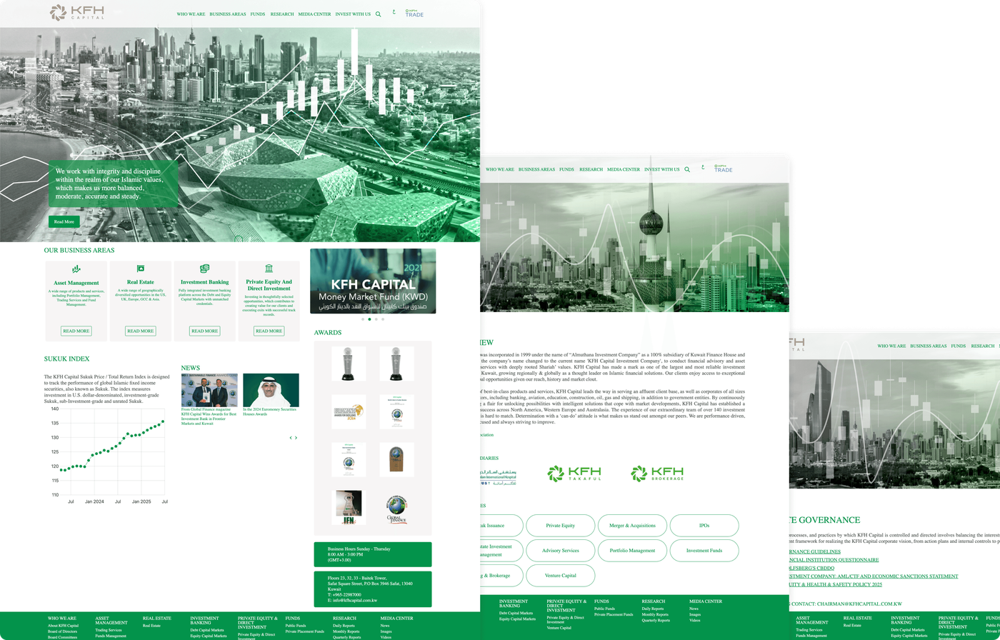
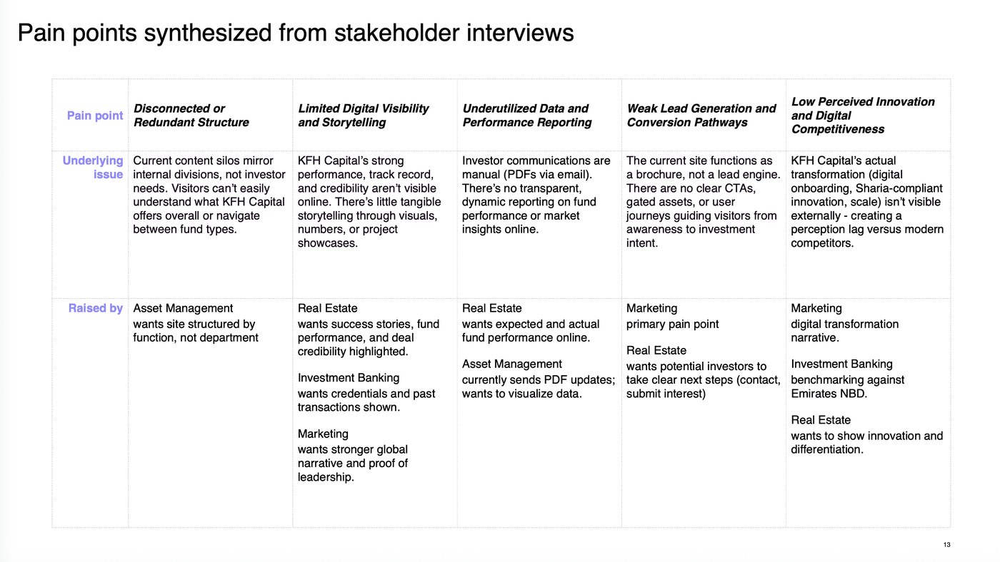
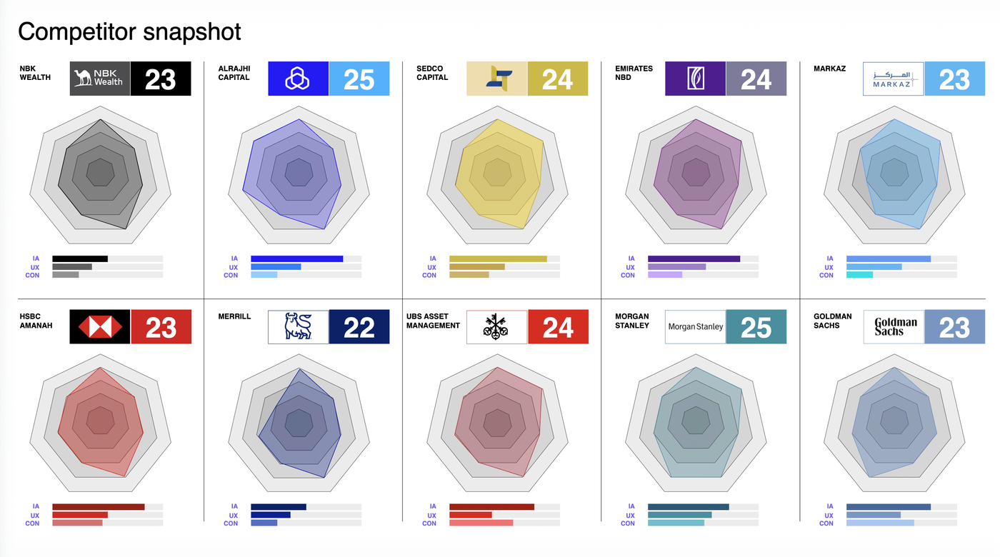
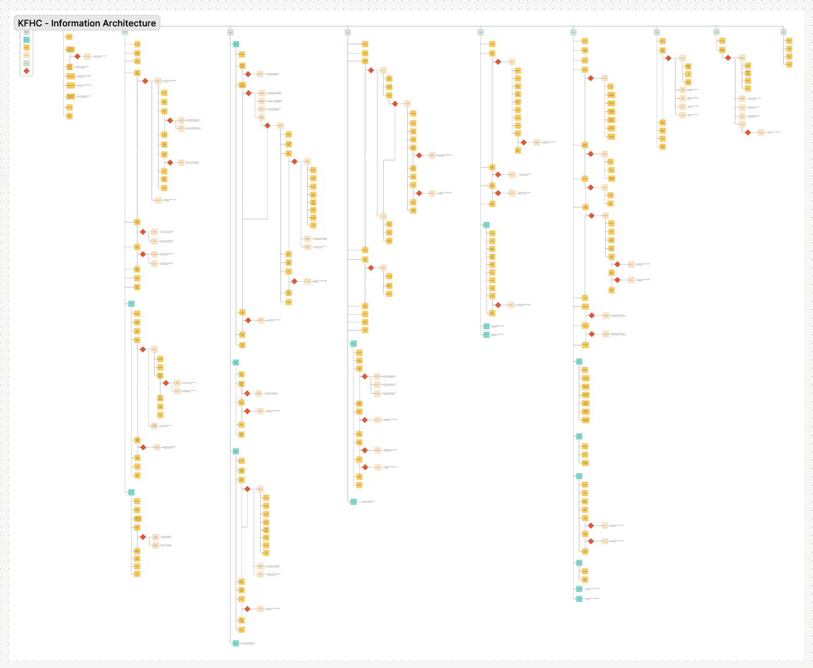
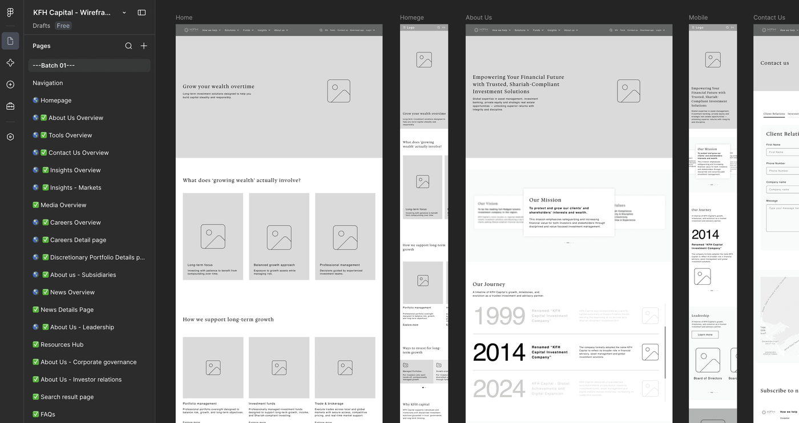
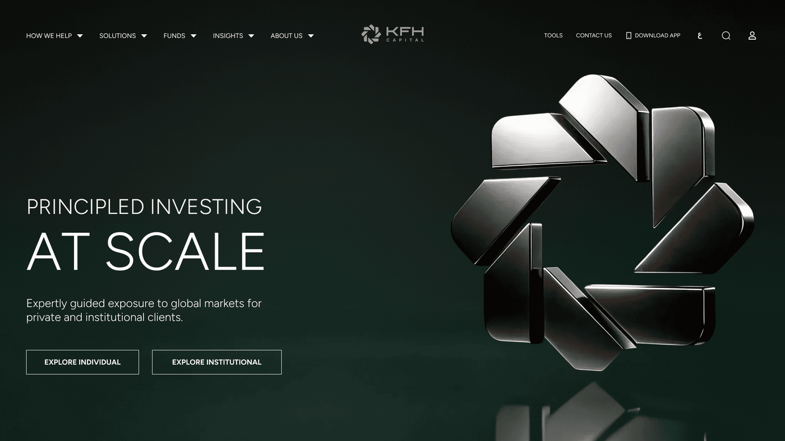
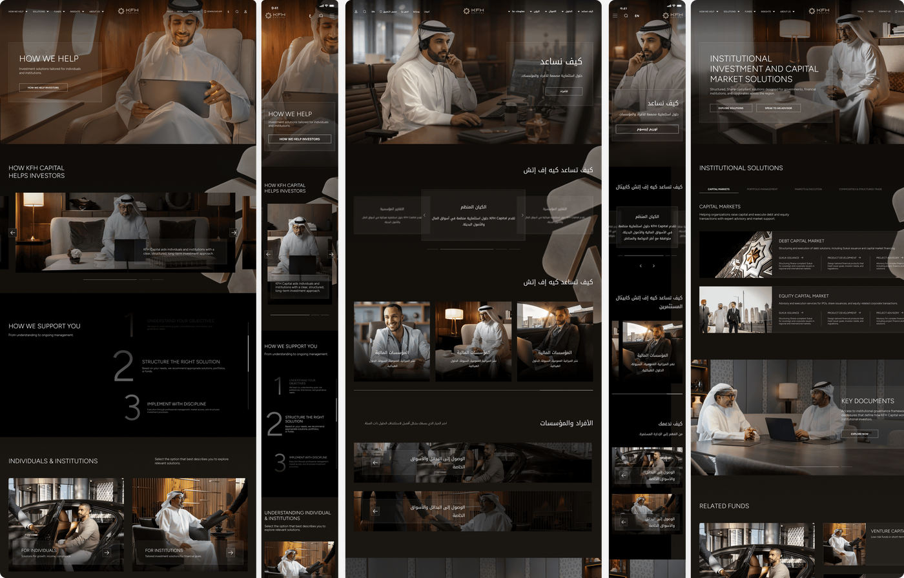
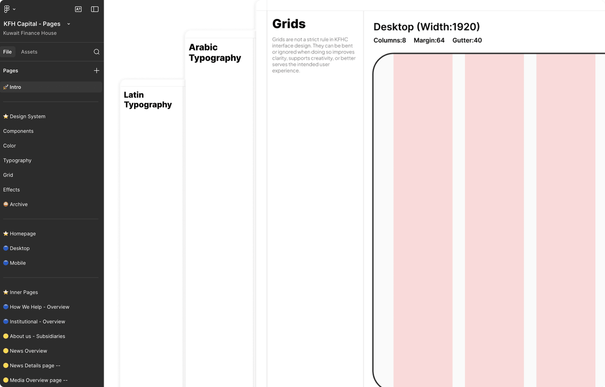

Aramco
Reducing engineering overhead at the design stage
Collapsed the design to engineering handoff on Aramco's marketing dashboard using AI assisted workflows.
59%
Saved in engineering cost70%
Faster end to end delivery
 KFH Capital Case Study
KFH Capital Case Study

Kuwait Finance House Capital's existing website didn't reflect the institution behind it. A brand with decades of history, regional awards, and billions in assets under management was living inside a generic financial template.
But the visual language was the surface problem. Underneath it, the site had no structure. Two very different audiences, individual investors and institutions, were being served the same undifferentiated content. There were no journeys, just pages.
I led the work end to end, from research and information architecture through wireframing, visual direction, and a design system built in parallel, delivered in English and Arabic across desktop and mobile.
A look at the final design before we get into how it came together.
Kuwait Finance House Capital is one of Kuwait's most established investment firms. Two decades of operation, Euromoney awards, billions in assets under management, clients spanning individuals and major institutions across the GCC.
Their website said none of this. Generic stock photography, a flat green across every surface, inner pages that were text on white. The visual language was saying regional bank. The brand deserved to say institutional investment partner.
The structural problem ran deeper. An institution serving high net worth individuals and institutional investors was routing both through the same undifferentiated path. Neither group was being shown what they came for.

I started with an audit of the existing site, assessed against heuristics covering clarity and hierarchy, navigation and findability, trust and credibility, mobile responsiveness, and accessibility. Then four interview sessions with the business units themselves: Real Estate Investment, Asset Management, Investment Banking, and Corporate Strategy and Marketing. Each described a different version of the same problem.
Alongside that I benchmarked eleven institutions, regional and global, including NBK Wealth, Al Rajhi Capital, Sedco Capital, Emirates NBD, and Goldman Sachs, each scored against seven principles. NBK Wealth, the benchmark the team had named at the start, scored 23 out of 35. The highest scorer reached 25. Nobody in the category had solved this well, which reframed the brief from catching up to setting the standard.


The site's structure mirrored KFH Capital's internal divisions rather than how investors actually think. Someone arriving to invest had to already understand the difference between Asset Management, Real Estate, and Investment Banking before they could find anything. The organisation chart had become the navigation.
So the architecture was rebuilt around intent instead of internal structure, with two distinct journeys for individuals and institutions, each surfacing what that group needed rather than making them dig for it.

The site was large enough that treating it as one deliverable would have meant every page getting equal, shallow attention. Instead it was broken into batches, so each set of pages got proper scrutiny before the next started. Same pattern as the IA, several rounds per batch until the team was aligned. Only once wireframes were signed off did any visual direction begin.

Kuwait Finance House Capital was already leading the region. The digital experience didn't say so. NBK Wealth had set the regional standard, interactive, considered, unmistakably premium, and the team named them as the benchmark to surpass. I approached the visual phase with a direction that hadn't been asked for: dark and cinematic, built around a 3D render of the Kuwait Finance House logo mark produced with AI assisted tools, kept faithful to their approved 2D logo.
I developed two visually distinct directions rather than one. Presenting a single concept forces a yes or no with nothing to measure it against. Concept 1 was atmospheric: a warm gold 3D render of the logo, liquid glass panels layering depth into the navigation. Concept 2 was authoritative: the same logo in platinum, a pure black background, constellation charts and area graphs. During Concept 2's development there was internal pressure to introduce the masterbrand green; I advised against it and prepared a version without it proactively. When the team saw the green version they rejected it immediately. The version already prepared was the one they responded to.

The response to both concepts was immediate. The CEO loved them equally and said it could go either way. Both concepts had captured something true about the brand: Concept 1 had the warmth of a wealth manager who had earned the right not to shout, Concept 2 had the authority of an institution operating across global markets. Kuwait Finance House Capital was both. Neither alone was the complete answer.
From Concept 2: the dark background and the authority it conveyed. From Concept 1: the gold logo, placed in the background rather than competing for attention, now rotating on scroll instead of continuously, so it only moves when you do. The black and white photography with selective gold highlights came from observation, a team member had noticed this exact visual treatment on the Kuwait office walls. Liquid glass carried through unchanged, becoming the defining interaction language across the entire site, and the element the CEO connected unprompted to Apple's design direction.
Before seeing any inner pages, the team raised a specific concern: most designers get the homepage right and lose the thread on inner pages. The design language carried through completely, dark background, warm photography, consistent typographic hierarchy, but a conscious decision was made to keep inner page interactions lighter than the homepage to protect performance. The bilingual delivery extended through every inner page at equal quality, English and Arabic fully mirrored with RTL layouts built to the same standard.

33 pages. English and Arabic. Desktop and mobile. 66 total deliverables. The design system was built in parallel with the work, typography and tokens defined early, Figtree for Latin, Noto Kufi Arabic for Arabic, liquid glass codified as a named effect. The token structure proved its value under pressure: when the team wanted to see a variation during a review call, it was mocked up before the call ended.

Testing ran with both internal team members and the same curated group of individual and institutional users who had taken part in research, so the people validating the work were the people it had been built around. Sessions were run in batches, matching how the design had been produced, each participant given a journey to complete and a goal to reach, then observed rather than asked. Insights from each batch fed back into that batch's designs, and forward into the ones still being built. By the later stages the same class of friction wasn't resurfacing, because it had already been designed out upstream.
Before launch, the CEO requested a board presentation, positioning the work as a reference point for what was possible across other divisions, expanding its scope beyond the original brief.
Leadership has also committed to submitting the work for regional and international industry recognition, and the platform has been positioned internally as the benchmark for the region's wealth management category, a signal of institutional confidence in the outcome, not just a design quality metric.
The homepage was built to be motion forward but interactions were dialed back significantly on inner pages. Fast and reliable on content heavy pages matters more than visual spectacle. Concept 1 had the logo rotating continuously, which felt atmospheric but distracting; Concept 2's scroll responsive approach was the right call, the brand moves when you engage with it rather than performing regardless of what the user is doing. Building the design system in parallel rather than after created short term friction but meant consistency across 66 deliverables was structural.
The structural problem was the real problem. Fixing the architecture first meant the visual work had something to sit on.
Two strong concepts don't create indecision, they create clarity, producing a synthesis neither direction could have reached alone.
Preparing is sometimes better than arguing. Having the right alternative ready meant no follow-up round was needed.
A design system built in parallel pays off in moments you can't plan for, like mocking up a live variation before a call ends.
Next Case Study
Collapsed the design to engineering handoff on Aramco's marketing dashboard using AI assisted workflows.